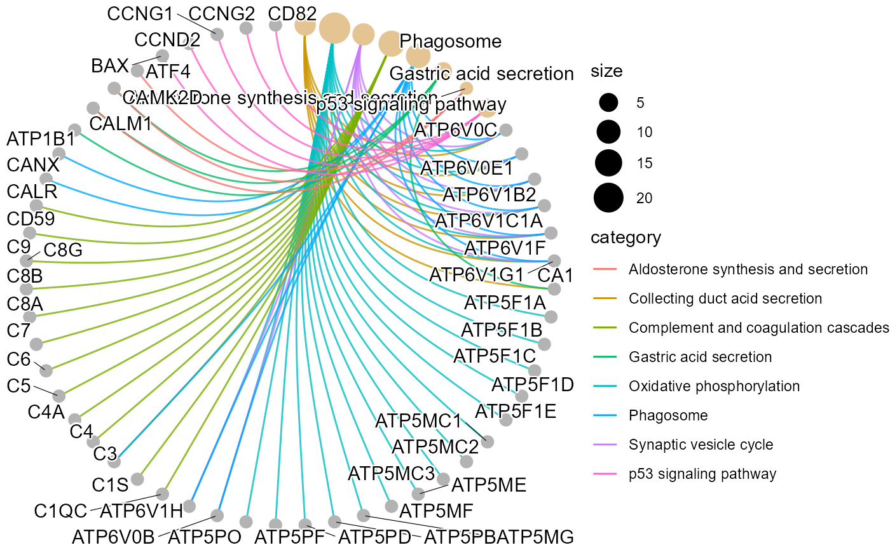

KEGG enrichment analysis and net plot (None/Exist Reference Genome).
Source:R/kegg_enrich_net.R
kegg_enrich_net.RdKEGG enrichment analysis and net plot (None/Exist Reference Genome).
Usage
kegg_enrich_net(
kegg_anno,
degs_list,
padjust_method = "fdr",
pvalue_cutoff = 0.05,
qvalue_cutoff = 0.05,
category_num = 20,
net_layout = "circle",
net_circular = TRUE,
low_color = "#ff0000aa",
high_color = "#008800aa"
)Arguments
- kegg_anno
Dataframe: GO and KEGG annotation of background genes (1st-col: Genes, 2nd-col: biological_process, 3rd-col: cellular_component, 4th-col: molecular_function, 5th-col: kegg_pathway).
- degs_list
Dataframe: degs list.
- padjust_method
Character: P-value adjust to Q-value. Default: "fdr" (false discovery rate), options: "holm", "hochberg", "hommel", "bonferroni", "BH", "BY", "fdr", "none".
- pvalue_cutoff
Numeric: P-value cutoff. Recommend: small than 0.05.
- qvalue_cutoff
Numeric: Q-value cutoff. Recommend: small than 0.05.
- category_num
Numeric: categories number to display. Default: 20, min: 1, max: NULL.
- net_layout
Character: network layout. Default: "circle", options: 'star', 'circle', 'gem', 'dh', 'graphopt', 'grid', 'mds', 'randomly', 'fr', 'kk', 'drl' or 'lgl'.
- net_circular
Logical: network circular. Default: TRUE, options: TRUE, FALSE.
- low_color
Character: low value (p-value or q-value) color (color name or hex value).
- high_color
Character: high value (p-value or q-value) color (color name or hex value).
Examples
# 1. Library TOmicsVis package
library(TOmicsVis)
# 2. Use example dataset
data(gene_go_kegg)
head(gene_go_kegg)
#> Genes
#> 1 FN1
#> 2 14-3-3ZETA
#> 3 A1I3
#> 4 A2M
#> 5 AARS
#> 6 ABAT
#> biological_process
#> 1 GO:0003181(atrioventricular valve morphogenesis);GO:0003128(heart field specification);GO:0001756(somitogenesis)
#> 2 <NA>
#> 3 <NA>
#> 4 <NA>
#> 5 GO:0006419(alanyl-tRNA aminoacylation)
#> 6 GO:0009448(gamma-aminobutyric acid metabolic process)
#> cellular_component
#> 1 GO:0005576(extracellular region)
#> 2 <NA>
#> 3 GO:0005615(extracellular space)
#> 4 GO:0005615(extracellular space)
#> 5 GO:0005737(cytoplasm)
#> 6 <NA>
#> molecular_function
#> 1 <NA>
#> 2 GO:0019904(protein domain specific binding)
#> 3 GO:0004866(endopeptidase inhibitor activity)
#> 4 GO:0004866(endopeptidase inhibitor activity)
#> 5 GO:0004813(alanine-tRNA ligase activity);GO:0005524(ATP binding);GO:0000049(tRNA binding);GO:0008270(zinc ion binding)
#> 6 GO:0003867(4-aminobutyrate transaminase activity);GO:0030170(pyridoxal phosphate binding)
#> kegg_pathway
#> 1 ko04810(Regulation of actin cytoskeleton);ko04510(Focal adhesion);ko04151(PI3K-Akt signaling pathway);ko04512(ECM-receptor interaction)
#> 2 ko04110(Cell cycle);ko04114(Oocyte meiosis);ko04390(Hippo signaling pathway);ko04391(Hippo signaling pathway -fly);ko04013(MAPK signaling pathway - fly);ko04151(PI3K-Akt signaling pathway);ko04212(Longevity regulating pathway - worm)
#> 3 ko04610(Complement and coagulation cascades)
#> 4 ko04610(Complement and coagulation cascades)
#> 5 ko00970(Aminoacyl-tRNA biosynthesis)
#> 6 ko00250(Alanine, aspartate and glutamate metabolism);ko00280(Valine, leucine and isoleucine degradation);ko00650(Butanoate metabolism);ko00640(Propanoate metabolism);ko00410(beta-Alanine metabolism);ko04727(GABAergic synapse)
# 3. Default parameters
kegg_enrich_net(gene_go_kegg[,c(1,5)], gene_go_kegg[100:200,1])
#> Warning: Expected 2 pieces. Additional pieces discarded in 27 rows [695, 696, 744, 747,
#> 750, 968, 977, 1177, 1474, 1646, 1653, 1659, 1886, 2163, 2174, 2187, 2193,
#> 2198, 2258, 2259, ...].
#> Warning: ggrepel: 4 unlabeled data points (too many overlaps). Consider increasing max.overlaps
# 4. Set category_num = 10
kegg_enrich_net(gene_go_kegg[,c(1,5)], gene_go_kegg[100:200,1], category_num = 10)
#> Warning: Expected 2 pieces. Additional pieces discarded in 27 rows [695, 696, 744, 747,
#> 750, 968, 977, 1177, 1474, 1646, 1653, 1659, 1886, 2163, 2174, 2187, 2193,
#> 2198, 2258, 2259, ...].
#> Warning: ggrepel: 4 unlabeled data points (too many overlaps). Consider increasing max.overlaps
